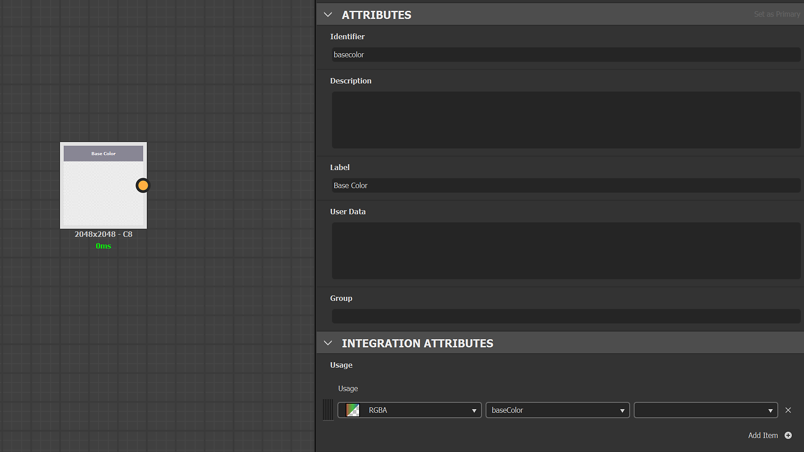
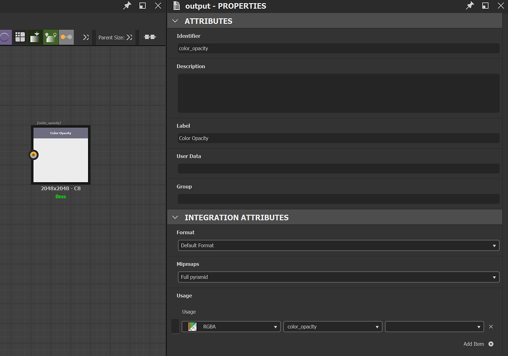
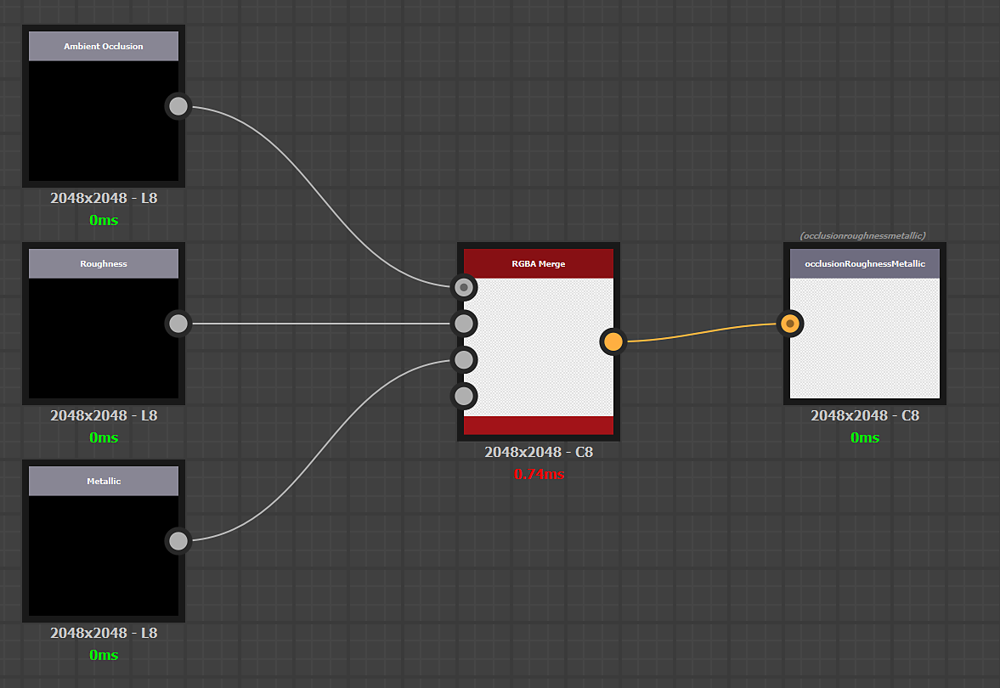
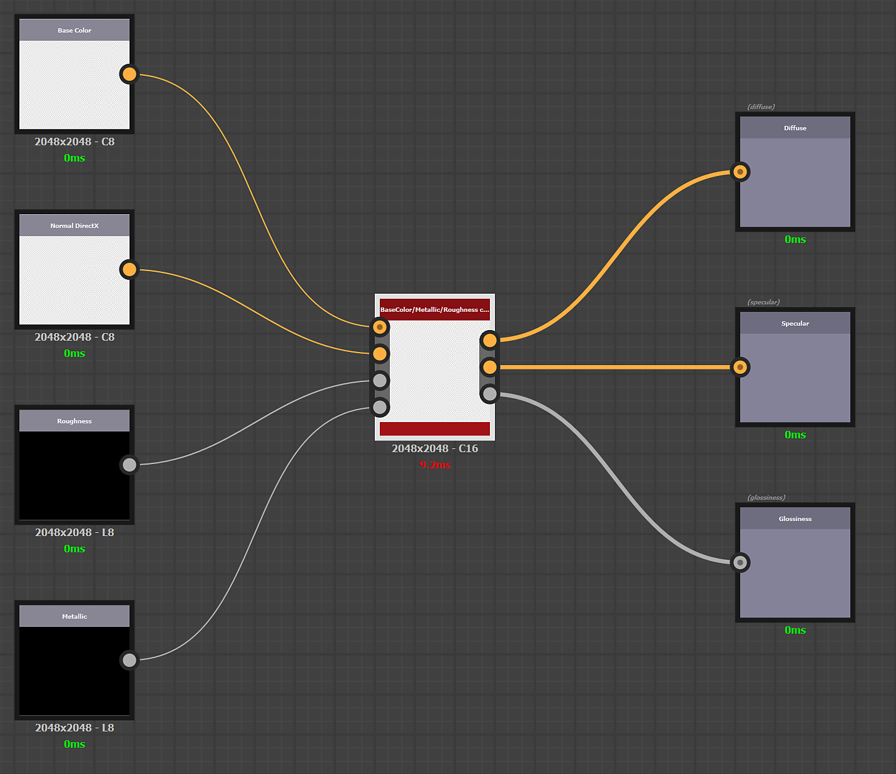
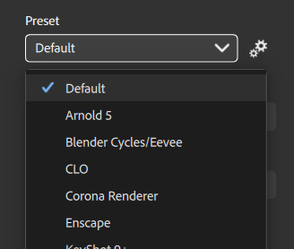

Custom presets can be created with Substance 3D Designer.
The creation of custom presets respects the same rules as creating a custom filter for Sampler. Documentation is available here.
Open Substance Designer and create a new Substance graph.
Open the graph properties and fill in the following mandatory information:
The inputs represent the material channels you want to transform before the export.
Create an Input Color node (or grayscale) per material channel and add a usage in the attributes to each input node to ensure the connection is made between your material(s) and your custom preset.
Example: Definition of the Base Color input

The outputs represent the result of your texture export.
Create one Output node per texture and add usage and a label in the attributes to each output node. The label will be displayed in the Channels list in the Exporter window and in the name of your texture file.
Example: Definition of the custom texture Color Opacity

Packing of 3 grayscale channels in one RGB texture:

Channel conversion from PBR Metallic/Roughness to PBR Specular/Glossiness:

To import your new preset:
